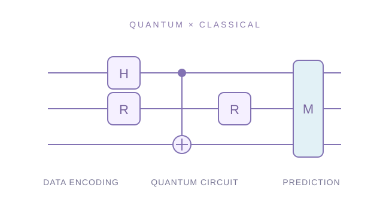

Who.

- 설계
- 구현
- 실험
- 검증
김연주 Yeonju Kim
국립한밭대학교 컴퓨터공학과 · 학사과정, 2023–현재
AIM Lab. 학부연구생 · UST·KISTI 양자정보 연구인턴
흉부 X-ray로 질환을 구분하는 AI 모델을 연구합니다.
UST·KISTI에서는 모델의 일부 계산을 양자 회로로 바꿔 기존 모델과 분류 성능을 비교하고 있습니다.
GPA 4.35 / 4.50 · 석차 2 / 112 (2026-1)TOEIC 780 (2026.08.23)
Pattern Recognition · SCIE 제1저자*신생아 흉부 X-ray의 호흡곤란증후군 분류 · 2026.09 게재 승인JCR Top 6.6% · IF 9.1 ↗
Skills.
AI & COMPUTER VISION


QUANTUM COMPUTING


양자 항목은 UST·KISTI 인턴십에서 학습·구현하며 실험 중인 연구 주제입니다. 아이콘을 누르면 관련 연구를 볼 수 있습니다.
의료영상 AI에서 양자정보로
Project.
연구 카드를 누르면 설명과 결과, 관련 증빙이 이 화면에서 열립니다.

Pattern Recognition
신생아 흉부 X-ray에서 호흡곤란증후군을 구분하는 AI 모델
JCR Top 6.6% · IF 9.1연구 자세히 보기

양자·고전 하이브리드 모델
AI 모델의 일부 계산을 양자 회로로 바꾸고 분류 성능을 비교
양자정보 연구인턴 · 지도교수 류정희연구 자세히 보기

블록 FFT 기반 주파수 증강
미세 병변 검출을 위해 영상에서 조절할 주파수 대역을 선택
한국방송·미디어공학회 논문 경진대회연구 자세히 보기

흉부 X-ray 대조학습
손실함수와 데이터 증강 조합을 내부·외부 데이터에서 비교
한국전기전자학회 논문지 · 29(3)연구 자세히 보기
* Pattern Recognition 제1저자: 저자 목록 첫 번째, 공동 기여 표기. JCR Top 6.6% 및 IF 9.1은 2025 JCR · Engineering, Electrical & Electronic 기준입니다.
논문·프로젝트 수상
최우수상 · 한국방송·미디어공학회 동계학술대회 대학생 및 고등학생 논문 경진대회
AI 부문 3등 · 소중한 SW·AI 경진대회 · Fake Text Detection, 팀 4im